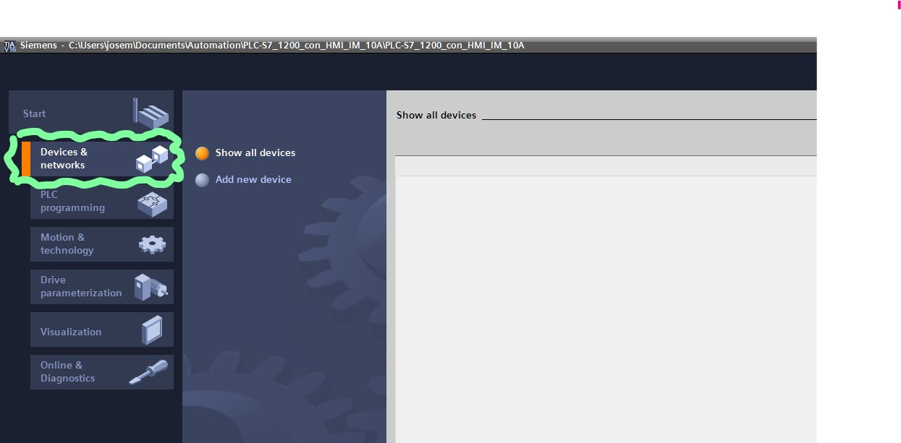
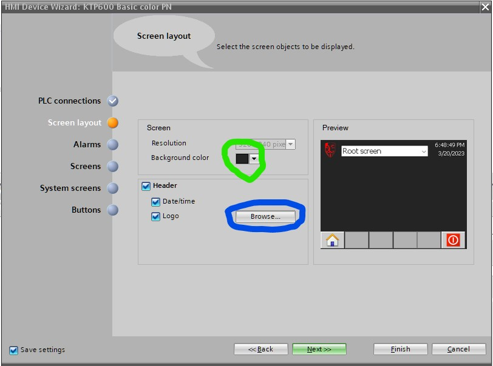
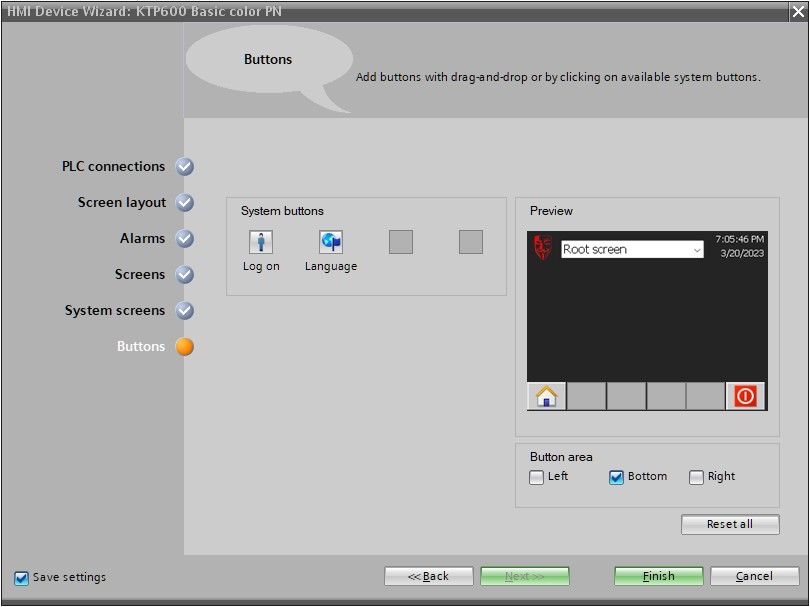

Introduccion
1. Creación de un nuevo proyecto en TIA PORTAL V16
Abra Tia Portal y cree un proyecto nuevo con el titulo que usted desee, en este caso tiene el nombre de PLC-S7_1200_con_HMI_10A,
una vez que ha sido creado su proyecto probablemente se actualice su ventana en la siguiente vista,

Esto indicará que su proyecto ha sido creado exitosamente
2. Selección de PLC y configuración de dirección IP
2.1. Selección de PLC
Dirijase al botón de dispositivos y redes de su proyecto, si su software se encuentra en inglés seleccione Devices & networks,

Siga los siguientes pasos:
- Seleccione
Add new device(Añadir nuevo dispositivo) como en la imagen que se encuentra subrayado en color rojo. - Seleccione
Controllers(controladores) tal como en la imagen que se encuentra encerrado en amarillo. - Abra la carpeta
SIMATIC S7-1200. subrayado en color azul. - Despliegue la carpeta de CPU.
- Abra la carpeta
CPU 1214CDC/DC/DCque se encuentra subrayada en color Naranja. - Seleccione el dispositivo
6ES7 214-1AG40-0XB0enmarcado en color verde. - Oprima el boton encerrado en color rosa.

Al finalizar la selección de su dispositivo puede ver un primer vistzo de su PLC en su ventana principal,

2.2. Configuración de dirección IP del PLC
Lo siguiente será configurar la dirección IP del PLC con los siguietnes pasos
- Seleccione el PLC (clickeando sobre la interfaz del PLC), tal como en la imagen (el icono encerrado en verde):

como resultado se desplegarán una serie de opciones en la parte inferiór.
- Selecciona la pesataña de
General(enmarcada en verde en la imagen inferiór). - Una serie subopciones son desplegadas, selecciona la opción que dice
PROFINET interface [x1](remarcada en rosa). - Selecciona la configuración de
Ethernet addresses(enmarcada en naranja). Esto mostrará un centro de configuración a su derecha con algunas opciones. - En el recuadro de
Interface networked with(Interfaz conectada en red con), añada una subredPN/1E_1(enmarcada en amarillo) en el comboboxSubnet. - En el recuadro
IP protocol(encerrado en color azul) complete los campos de acuerdo a su configuración física de PLC, swicheador:- inserte la dirección IP del PLC en el campo de
IP address. - coloque la mascara de subred en el campo de
subnet mask. - coloque la dirección del router (swicheador) en el campo de
Router address.
- inserte la dirección IP del PLC en el campo de

3. Selección de HMI
3.1. Selección de HMI
- Dirijase a la ventana de dispositivos (
Devices) y seleccione el botón deAdd new device(enmarcado en color azul).
Se abrirá una nueva ventana con varias opciones para añadir nuevos dispositivos en su programa.
-
Seleccione el botón
HMIenmarcado en color verde, despliegue la carpetaHMIque se muestra en el recuadro de carpetas; seleccione y despliegue la subcarpetaSIMATIC Basic Panelenmarcada en color rosa. -
Seleccione la carpeta de panatalla de 6 pulgadas (
6" Display) enmarcada naranja, Despliegue la carpeta de dispositivosKTP600 Basicy seleccione el dispositivo6AV6 647 -0AD11 -3AX0ambos enmarcados en la imagen en color amarillo. -
Presione el boton
Oky con eso finaliza la selección de su dispositivo.

En consecuencia se desplegará una nueva ventana que le preguntará acerca de la configuración que desea hacer para su HMI
3.2. Configuración inicial de HMI
Durante su configuración de su HMI siga los siguientes pasos para aplicar las especificaciones pertinentes.
- Como primer paso le preguntará si conectará su HMI a un PLC, usted debe seleccionar el botón de
Browsersenmarcado en color amarillo en su imagen, por consiguiente debería aparecer el PLC que ocupo en el capitulo selección de plc, que en este caso aparece comoPLC_1el cual se encuentra enmarcado en la imagen en color azul. Posterriormente finalice esta acutalización presionando el botón deNext>>de su ventana para pasar al siguiente paso.

- De formato de color y algunas características a su interfáz de ventana raíz, en el caso de la imagen se añadió un ícono con el botón de
Browsersencerrado en color azul y se selecciono un color de fondo oscuro con el botón de color encerrado en color verde. Nuevamente al terminar esta configuración presione el botón deNext>>para continuar con los pasos.

- Desactive las alarmas, para este caso las opciónes de check-buttons deberian estar desmarcadas ya que para esta práctica no son necesarias. Continue al siguiente paso con
Next>>.

- Asegurese de que la configuración de
Screenssolo esté añadido el íconoRoot screeny solo este la ventana raíz. Siga conNext>>.

- Omita este paso ya que no vamos a conectar la vista
Root screena ninguna configuración especial. Asegurese de que su configuración se encuentre como en la imagen siguiente. Cuando haya configurado correctamente, prosiga conNext>>.

- Asegurese de tener añadidos el boton de
Home(Icono de casa) y el deDisconect(Icono de apagado de la pantalla) a su interfáz de pantalla. Presione enFinishpara finalizar con la configuración.

Al finalizar toda la configuración de su HMI podrá ver una vista similar a la de la imagen siguiente; y en su árbol de carpetas de dispositivos encontrará que se ha añadido una carpeta con el nombre de
HMI_1 [KTP600 Basic color PN]

4. Creación de Programa LD
4.1. Definición de variables para el programa en LD
- Dirijase al arbol de carpetas del proyecto y despliegue la carpeta del dispositivo
PLC [CPU 1214C DC/DC/DC], encuentre la acciónAdd new tag table(enmarcado en color azul) y presione enter sobre ella.

- Lo siguiente que verá es que se ha creado un nuevo archivo
Tag table_1 [0], de click sobre el para abrirlo.

-
En el centro de trabajo de variables de su software se despliega una tabla donde se pueden anexar varaibles.
-
Añada una variable de nombre
arranqueque alamacene un tipo de datoBoolcon la dirección%I0.0. -
Añada una variable de nombre
paroque almacene un tipo de datoBoolcon dirección%I0.1. -
Agregue una última variable con nombre
motorcon tipo de datoBoolcon dirección%Q0.0 -
Asegurese de que de las siguientes checkbox de cada una de las variables se encuentren enmarcadas, tal como en la imagen posterior.
Accessible from HMI/OPC UA/Web APIWritable from HMI/OPC UA/Web APIVisible from HMI/OPC UA/Web API
-

4.2. Construcción del Programa en lenguaje LD
-
Para construir su programa en lenguaje
LDsiga los siguientes pasos.-
Dirijase a la subcarpeta
Program blocks(enmarcado en azul en la imagen inferiór) donde se encuentra su dispositivo PLC y seleccione el archivoMain [OB1](enmarcado en color naranja). -
En area del programa
Main [OB1]construya un programa como el mostrado en la imagen siguiente.
-

4.3. Definición de variables para el programa en HMI.
-
Añada una nueva tabla de varaibles, tal como lo hizo en la sección 4.1. Definición de variables para el programa en LD; esta vez se dirigirá al dispositivo HMI del arbol de archivos del proyecto y seleccione la acción
Add new table(enmarcada en azul en la imagen posterior); dirijase a su archivo que acaba de crear, en este caso le hemos nombradoTabla de variables_1 [3]y está remarcada en verde. -
Confeccione su tabla de variables en el archivo
Tabla de variables_1con los siguientes nombres y especificaciones:Variable_HMI_arranque: Asegurese de que esté conectada a la bandera de PLC de nomobrearranqueen la opciónPLC tagy anexe le dirección%I0.0en el campo deAddress.Variable_HMI_motor: El campo dePLC tagdebe tener la variabemotory el campo deAddressla dirección%Q0.0.Variable_HMI_paro: El campo dePLC tagpara esta variable debe tener la variableparoy el campor deAddressla dirección%I0.1.
-
Asegurese que cada una de estas varaibles sea un tipo de dato
Bool, el campo deConnectionesté vinculado alHMI_Conexión_1; elAcces Modetenga el valor<absolute mode>; el camp deAcquisition cycletenga de valor \(100ms\)